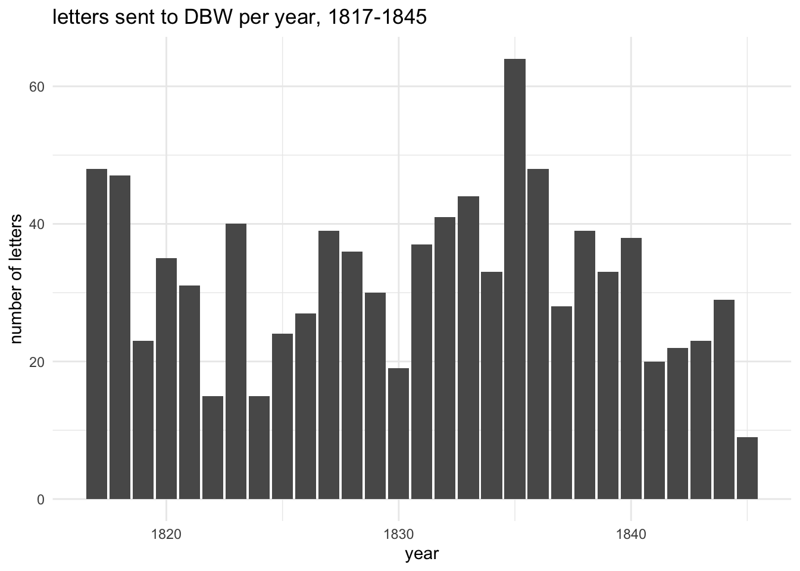
Exploring DBW’s correspondence
Static visualisations of patterns and networks in DBW’s letters.
NB: these are exploratory visualisations only. Some are still a bit rough round the edges (eg labelling).
using the latest version of name linking
Where minimum counts have been applied, this is as a rule simply for aesthetic reasons, to avoid overcrowding and keep graphs readable.
changing patterns of letters to DBW
- letters sent by DBW are excluded because they’re a small and unsystematic sample (from his letter books)
- all chronological analysis excludes 84 letters (out of 1090) that can’t be dated to a year (and a single letter sent in 1846, after DBW’s death)
Some of the letters written to DBW were letters of introduction; the proportions of these also changed over time and at least partly correlate with the overall pattern.
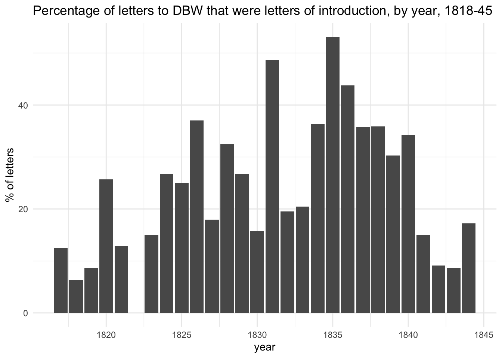
who wrote to dbw most often?
- excludes unlinked names
- includes untranscribed letters
- correspondents who wrote at least 7 letters
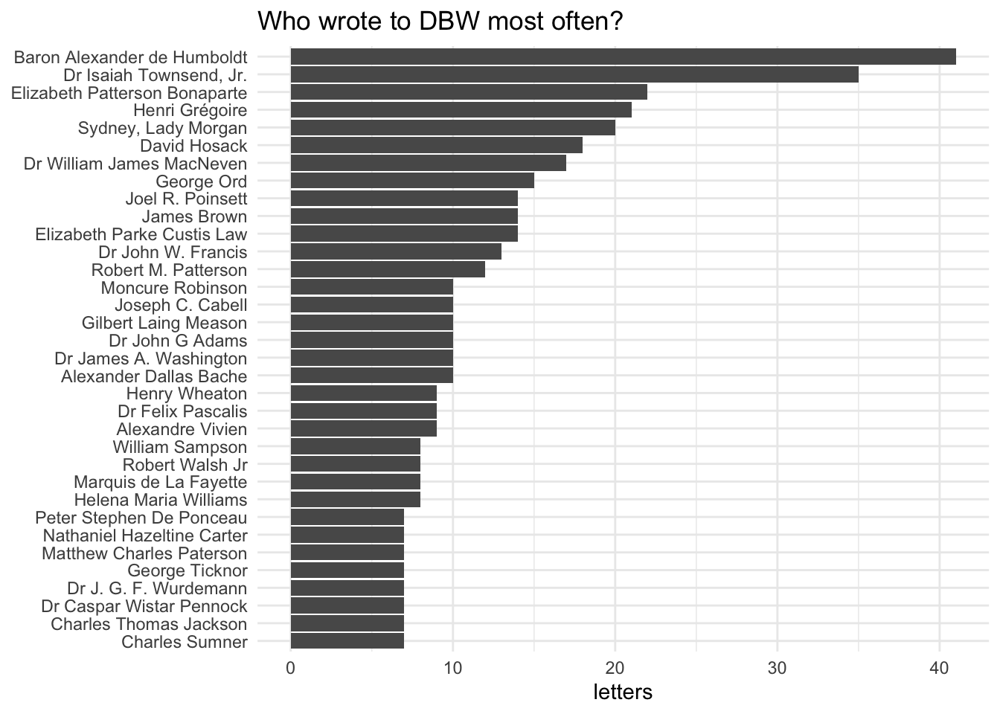
how much did this change over time?
- the letters have been divided into two fairly evenly balanced periods, 1817-31 (451 letters) and 1832-45 (465)
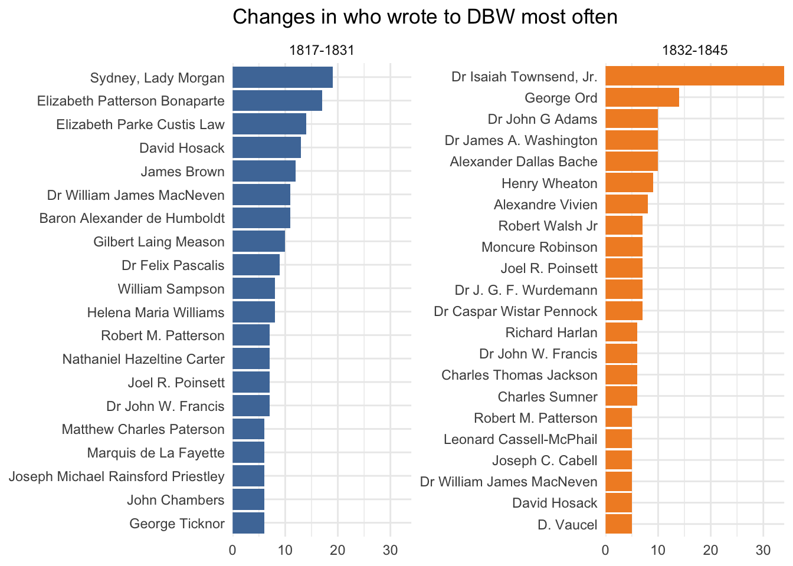
senders who mention the most people…
- excludes unlinked names and untranscribed letters (and DBW’s letters)
- correspondents who wrote at least 6 letters and mentioned at least 10 people in total
(DBW mentions about 1.5 names per letter in his own letters)
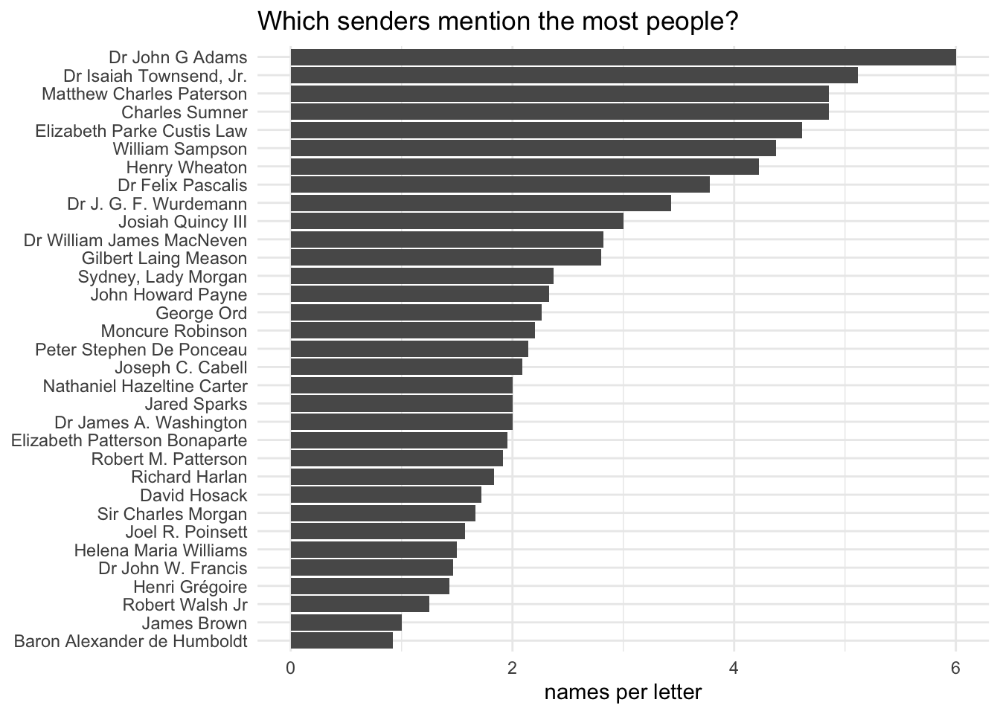
which people were mentioned most often?
all mentions in letter texts
- excludes the letter’s sender and recipient
- at least 7 mentions
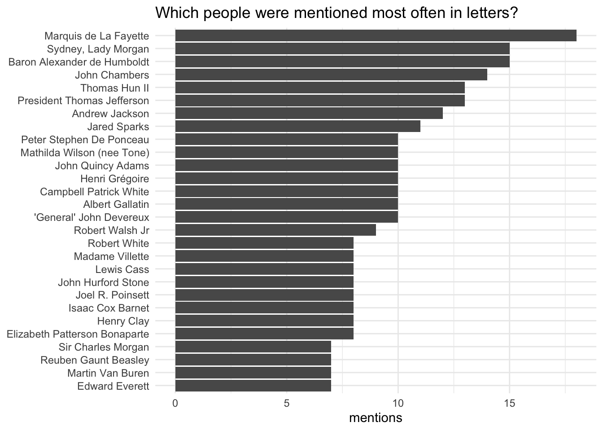
restricted to correspondents
- still excludes the sender/recipient of the letter
- at least 6 mentions
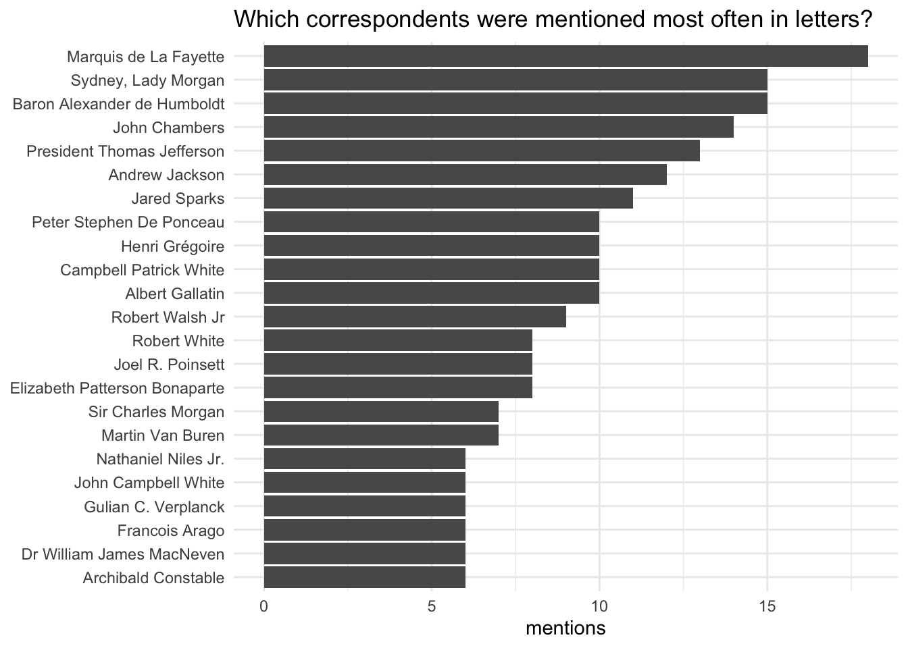
which non-correspondents were mentioned most often?
- at least 6 mentions
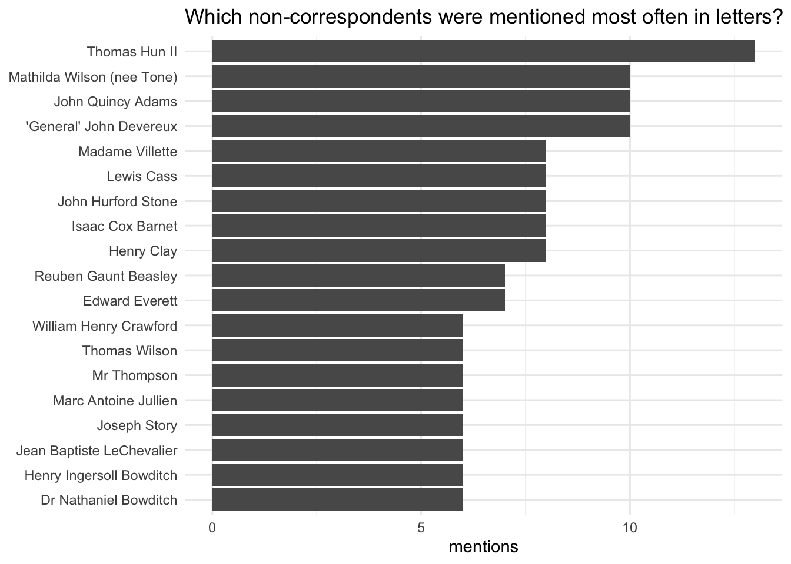
Though some organisations were mentioned far more often than people
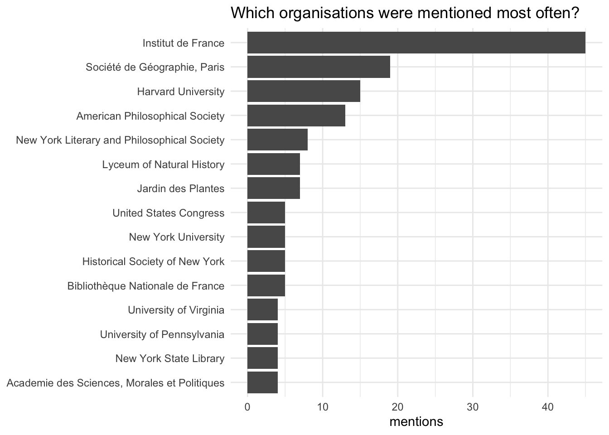
where did correspondents write from?
- NB that only about 57% of the letters have a place of origin
- “other” is mainly South America, plus I think one or two letters from north Africa
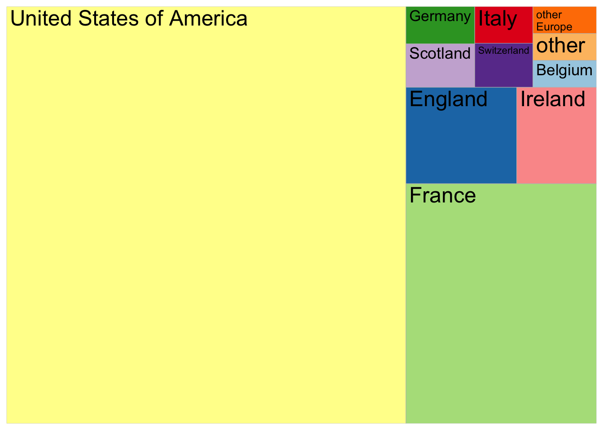
networks
These are graphs of co-occurring names in the letters. Darker lines = more co-occurrences.
all names
- using different colours to highlight correspondents and non-correspondents
- at least 3 co-occurrences
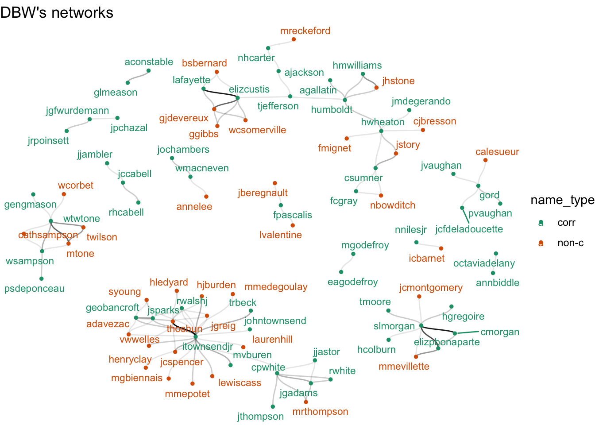
correspondents only
- at least 2 co-occurrences
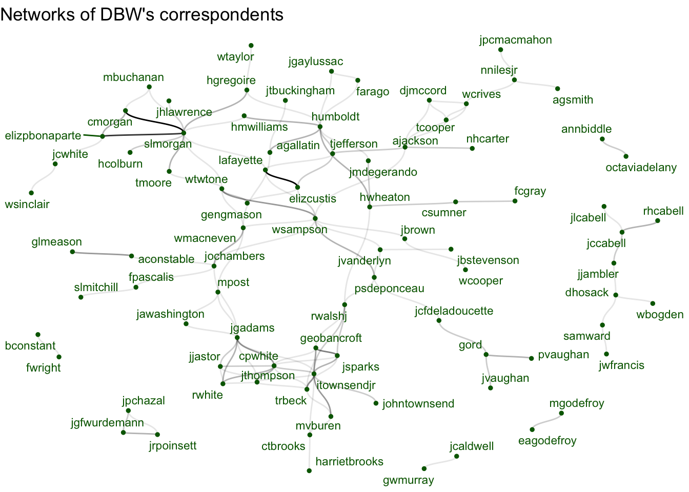
change over time
- 1817-31 and 1832-45
- all co-occurring names
- at least 4 co-occurrences
- each side shows all names, whether mentioned in that period or not; this aids comparison but it means that not all names have connecting lines
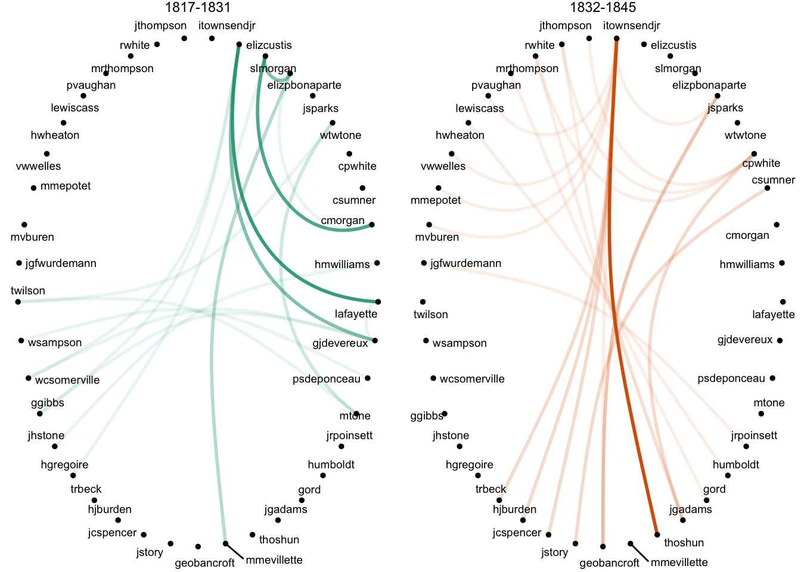
names list
| label | name |
|---|---|
| aconstable | Archibald Constable |
| agallatin | Albert Gallatin |
| agsmith | Alban G. Smith |
| ajackson | Andrew Jackson |
| annbiddle | Ann Mullanphy Biddle |
| bconstant | Benjamin Constant |
| cmorgan | Sir Charles Morgan |
| cpwhite | Campbell Patrick White |
| csumner | Charles Sumner |
| ctbrooks | Charles Timothy Brooks |
| dhosack | David Hosack |
| djmccord | Colonel David J. McCord |
| eagodefroy | Elizabeth Anderson Godefroy |
| elizcustis | Elizabeth Parke Custis Law |
| elizpbonaparte | Elizabeth Patterson Bonaparte |
| farago | Francois Arago |
| fcgray | F. C. Gray |
| fpascalis | Dr Felix Pascalis |
| fwright | Frances Wright |
| gengmason | George Mason VI |
| geobancroft | George Bancroft |
| glmeason | Gilbert Laing Meason |
| gord | George Ord |
| gwmurray | G. W. Murray |
| harrietbrooks | Mrs Harriet Brooks |
| hcolburn | Henry Colburn |
| hgregoire | Henri Grégoire |
| hmwilliams | Helena Maria Williams |
| humboldt | Baron Alexander de Humboldt |
| hwheaton | Henry Wheaton |
| itownsendjr | Dr Isaiah Townsend, Jr. |
| jawashington | Dr James A. Washington |
| jbrown | James Brown |
| jbstevenson | John B Stevenson |
| jcaldwell | John Caldwell |
| jccabell | Joseph C. Cabell |
| jcfdeladoucette | Baron Jean Charles François de Ladoucette |
| jcwhite | John Campbell White |
| jgadams | Dr John G Adams |
| jgaylussac | Joseph Gay-Lussac |
| jgfwurdemann | Dr J. G. F. Wurdemann |
| jhlawrence | James Henry Lawrence |
| jjambler | John Jacquelin Ambler |
| jjastor | John Jacob Astor |
| jlcabell | Dr James Lawrence Cabell |
| jmdegerando | Joseph-Marie de Gérando |
| jochambers | John Chambers |
| johntownsend | Dr John Townsend |
| jpchazal | Dr John Philip Chazal |
| jpcmacmahon | Colonel J. P. C. MacMahon |
| jrpoinsett | Joel R. Poinsett |
| jsparks | Jared Sparks |
| jtbuckingham | Joseph T. Buckingham |
| jthompson | Jonathan Thompson |
| jvanderlyn | John Vanderlyn |
| jvaughan | John Vaughan |
| jwfrancis | Dr John W. Francis |
| lafayette | Marquis de La Fayette |
| mbuchanan | M. Buchanan |
| mgodefroy | Maximilien Godefroy |
| mpost | Minturn Post |
| mvburen | Martin Van Buren |
| nhcarter | Nathaniel Hazeltine Carter |
| nnilesjr | Nathaniel Niles Jr. |
| octaviadelany | Octavia Mullanphy Delany Boyce |
| psdeponceau | Peter Stephen De Ponceau |
| pvaughan | Petty Vaughan |
| rhcabell | Robert H. Cabell |
| rwalshj | Robert Walsh Jr |
| rwhite | Robert White |
| samward | Samuel Ward |
| slmitchill | Samuel Latham Mitchill |
| slmorgan | Sydney, Lady Morgan |
| tcooper | Thomas Cooper |
| tjefferson | President Thomas Jefferson |
| tmoore | Thomas Moore |
| trbeck | Theodric Romeyn Beck |
| wbogden | William B. Ogden |
| wcooper | W Cooper |
| wcrives | William Cabell Rives |
| wmacneven | Dr William James MacNeven |
| wsampson | William Sampson |
| wsinclair | William Sinclair |
| wtaylor | William Taylor |
| wtwtone | William Theobald Wolfe Tone |